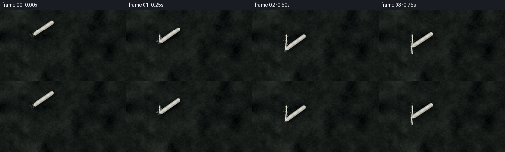
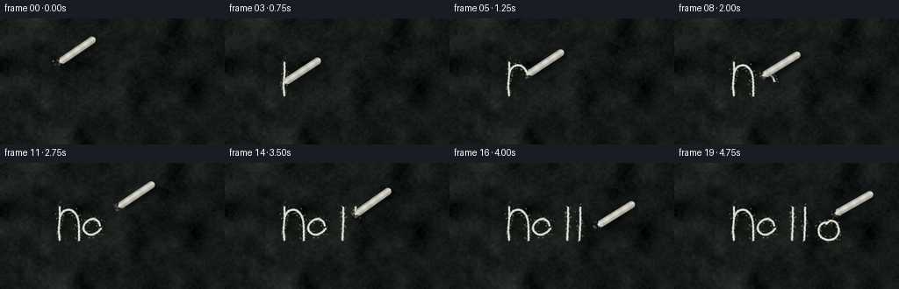

CODING AGENTS AS PIXEL WORLD MODELS
traex/DeepSeek-V4.1-Flash · phygen_031
点击播放 · 原生 RGB 像素
逐轮保存的候选
回放视频、检查图与代码变化。
每份候选均可单独播放。实际图片检查记录在下方工具轨迹中。
候选 01播放与检查图
点击播放 · 原生 RGB 像素


展开代码变化
--- 上一保存版本
+++ 本次保存版本
@@ -0,0 +1,486 @@
+from pathlib import Path
+
+import numpy as np
+from PIL import Image, ImageDraw, ImageFilter
+
+import artifact_io
+
+
+W, H = 256, 144
+SCALE = 4
+FPS = 4
+FRAME_COUNT = 20
+HI_W, HI_H = W * SCALE, H * SCALE
+
+
+def _float_noise(height, width, grid_h, grid_w, seed):
+ rng = np.random.default_rng(seed)
+ small = rng.normal(0.0, 1.0, (grid_h, grid_w)).astype(np.float32)
+ image = Image.fromarray(small, mode="F").resize(
+ (width, height), Image.Resampling.BICUBIC
+ )
+ return np.asarray(image, dtype=np.float32)
+
+
+def _normalise(field):
+ field = field - float(field.mean())
+ scale = float(field.std())
+ return field / max(scale, 1e-5)
+
+
+def make_board():
+ """A worn, green-black slate surface with erased chalk residue."""
+ yy, xx = np.mgrid[0:HI_H, 0:HI_W].astype(np.float32)
+
+ broad = (
+ 0.65 * _float_noise(HI_H, HI_W, 7, 12, 11)
+ + 0.28 * _float_noise(HI_H, HI_W, 15, 27, 12)
+ + 0.12 * _float_noise(HI_H, HI_W, 31, 55, 13)
+ )
+ medium = (
+ 0.55 * _float_noise(HI_H, HI_W, 59, 105, 21)
+ + 0.30 * _float_noise(HI_H, HI_W, 117, 209, 22)
+ )
+ fine = _float_noise(HI_H, HI_W, HI_H, HI_W, 31)
+ broad = _normalise(broad)
+ medium = _normalise(medium)
+
+ base = np.empty((HI_H, HI_W, 3), dtype=np.float32)
+ base[..., 0] = 23.0 + broad * 5.2 + medium * 2.4 + fine * 0.75
+ base[..., 1] = 28.0 + broad * 5.8 + medium * 2.6 + fine * 0.85
+ base[..., 2] = 25.5 + broad * 5.0 + medium * 2.2 + fine * 0.72
+
+ # Soft lighting from upper-left and a restrained edge vignette.
+ nx = xx / max(HI_W - 1, 1)
+ ny = yy / max(HI_H - 1, 1)
+ light = 1.055 - 0.12 * nx - 0.055 * ny
+ radius = np.sqrt((nx - 0.43) ** 2 * 0.75 + (ny - 0.48) ** 2)
+ light *= 1.0 - 0.13 * np.clip(radius, 0.0, 1.0) ** 2
+ base *= light[..., None]
+
+ # Faint eraser sweeps give the surface a history without competing with the writing.
+ residue = Image.new("L", (HI_W, HI_H), 0)
+ rd = ImageDraw.Draw(residue)
+ rd.line(
+ [(0.58 * HI_W, 0.06 * HI_H), (0.88 * HI_W, 0.44 * HI_H)],
+ fill=26,
+ width=int(0.13 * HI_H),
+ )
+ rd.line(
+ [(0.08 * HI_W, 0.75 * HI_H), (0.38 * HI_W, 0.98 * HI_H)],
+ fill=18,
+ width=int(0.10 * HI_H),
+ )
+ rd.arc(
+ (
+ int(0.56 * HI_W),
+ int(-0.10 * HI_H),
+ int(1.08 * HI_W),
+ int(0.52 * HI_H),
+ ),
+ start=105,
+ end=245,
+ fill=14,
+ width=int(0.055 * HI_H),
+ )
+ residue = residue.filter(ImageFilter.GaussianBlur(0.040 * HI_H))
+ residue_arr = np.asarray(residue, dtype=np.float32) / 255.0
+ base[..., 0] += residue_arr * 4.1
+ base[..., 1] += residue_arr * 4.6
+ base[..., 2] += residue_arr * 4.1
+
+ # Sparse pitting and tiny slate flakes.
+ pits = (fine < -2.20).astype(np.float32)
+ pits = np.asarray(
+ Image.fromarray((pits * 255).astype(np.uint8)).filter(
+ ImageFilter.GaussianBlur(0.55)
+ ),
+ dtype=np.float32,
+ ) / 255.0
+ base -= pits[..., None] * np.array([5.2, 4.6, 4.4], dtype=np.float32)
+
+ return np.clip(base, 0.0, 255.0).astype(np.uint8)
+
+
+def catmull_rom(points, samples_per_segment=34):
+ pts = np.asarray(points, dtype=np.float32)
+ if len(pts) == 2:
+ t = np.linspace(0.0, 1.0, samples_per_segment + 1, dtype=np.float32)[:, None]
+ return pts[0] * (1.0 - t) + pts[1] * t
+
+ padded = np.vstack([pts[0], pts, pts[-1]])
+ pieces = []
+ for index in range(1, len(padded) - 2):
+ p0, p1, p2, p3 = padded[index - 1 : index + 3]
+ t = np.linspace(0.0, 1.0, samples_per_segment, endpoint=False, dtype=np.float32)
+ t2 = t * t
+ t3 = t2 * t
+ curve = 0.5 * (
+ 2.0 * p1
+ + (-p0 + p2) * t[:, None]
+ + (2.0 * p0 - 5.0 * p1 + 4.0 * p2 - p3) * t2[:, None]
+ + (-p0 + 3.0 * p1 - 3.0 * p2 + p3) * t3[:, None]
+ )
+ pieces.append(curve)
+ pieces.append(pts[-1][None, :])
+ return np.vstack(pieces)
+
+
+def make_stroke(points, seed):
+ curve = catmull_rom(points)
+ lengths = np.linalg.norm(np.diff(curve, axis=0), axis=1)
+ cumulative = np.concatenate([[0.0], np.cumsum(lengths)])
+ if cumulative[-1] <= 1e-6:
+ cumulative[-1] = 1.0
+
+ # A very small transverse wobble keeps the edge from looking vector-perfect.
+ tangents = np.gradient(curve, axis=0)
+ tangent_len = np.linalg.norm(tangents, axis=1)
+ tangents /= np.maximum(tangent_len[:, None], 1e-5)
+ normals = np.column_stack([-tangents[:, 1], tangents[:, 0]])
+ phase = seed * 1.731
+ wobble = 0.18 * np.sin(np.arange(len(curve)) * 0.61 + phase)
+ wobble += 0.10 * np.sin(np.arange(len(curve)) * 1.87 + phase * 0.53)
+ rough_curve = curve + normals * wobble[:, None]
+ return {
+ "curve": rough_curve,
+ "cumulative": cumulative,
+ "length": float(cumulative[-1]),
+ "seed": int(seed),
+ }
+
+
+def partial_stroke(stroke, fraction):
+ fraction = float(np.clip(fraction, 0.0, 1.0))
+ if fraction <= 0.0:
+ return stroke["curve"][:1], 0.0
+ target = stroke["length"] * fraction
+ idx = int(np.searchsorted(stroke["cumulative"], target, side="right") - 1)
+ idx = max(0, min(idx, len(stroke["curve"]) - 2))
+ seg_start = stroke["cumulative"][idx]
+ seg_end = stroke["cumulative"][idx + 1]
+ blend = 0.0 if seg_end <= seg_start else (target - seg_start) / (seg_end - seg_start)
+ endpoint = stroke["curve"][idx] * (1.0 - blend) + stroke["curve"][idx + 1] * blend
+ result = stroke["curve"][: idx + 1].copy()
+ result = np.vstack([result, endpoint[None, :]])
+ return result, target
+
+
+def draw_stroke_masks(strokes, fractions):
+ body = Image.new("L", (HI_W, HI_H), 0)
+ core = Image.new("L", (HI_W, HI_H), 0)
+ dust = Image.new("L", (HI_W, HI_H), 0)
+ body_draw = ImageDraw.Draw(body)
+ core_draw = ImageDraw.Draw(core)
+ dust_draw = ImageDraw.Draw(dust)
+
+ for stroke, fraction in zip(strokes, fractions):
+ if fraction <= 0.0:
+ continue
+ points, drawn_length = partial_stroke(stroke, fraction)
+ high = points * SCALE
+ coords = [tuple(map(float, point)) for point in high]
+ if len(coords) == 1:
+ coords.append(coords[0])
+
+ body_draw.line(coords, fill=255, width=9, joint="curve")
+ body_draw.ellipse(
+ (high[-1, 0] - 4.5, high[-1, 1] - 4.5, high[-1, 0] + 4.5, high[-1, 1] + 4.5),
+ fill=255,
+ )
+ core_draw.line(coords, fill=235, width=4, joint="curve")
+
+ rng = np.random.default_rng(stroke["seed"] * 1009 + 7)
+ particle_count = max(16, int(stroke["length"] * 1.2))
+ distances = rng.uniform(0.0, stroke["length"], particle_count)
+ active = distances <= drawn_length
+ distances = distances[active]
+ offsets = rng.normal(0.0, 2.2, (len(distances), 2))
+ sizes = rng.uniform(0.45, 1.55, len(distances))
+ for distance, offset, size in zip(distances, offsets, sizes):
+ position = np.interp(distance, stroke["cumulative"], np.arange(len(stroke["curve"])))
+ low = int(np.floor(position))
+ high_idx = min(low + 1, len(stroke["curve"]) - 1)
+ blend = position - low
+ point = stroke["curve"][low] * (1.0 - blend) + stroke["curve"][high_idx] * blend
+ point = (point + offset) * SCALE
+ radius = max(0.65, float(size) * SCALE * 0.55)
+ dust_draw.ellipse(
+ (point[0] - radius, point[1] - radius, point[0] + radius, point[1] + radius),
+ fill=int(90 + 80 * (size / 1.55)),
+ )
+
+ body_arr = np.asarray(body, dtype=np.float32) / 255.0
+ core_arr = np.asarray(core, dtype=np.float32) / 255.0
+ dust_arr = np.asarray(dust, dtype=np.float32) / 255.0
+
+ grain = _float_noise(HI_H, HI_W, HI_H, HI_W, 77)
+ body_grain = np.clip(0.80 + grain * 0.13, 0.50, 1.0)
+ body_arr *= body_grain
+ core_arr *= np.clip(0.83 + grain * 0.10, 0.58, 1.0)
+
+ halo = np.asarray(
+ Image.fromarray((body_arr * 255).astype(np.uint8)).filter(
+ ImageFilter.GaussianBlur(4.2)
+ ),
+ dtype=np.float32,
+ ) / 255.0
+ return body_arr, core_arr, dust_arr, halo
+
+
+def composite_writing(board, strokes, fractions, tip, pen_down):
+ image = board.astype(np.float32).copy()
+ body, core, dust, halo = draw_stroke_masks(strokes, fractions)
+
+ if pen_down:
+ yy, xx = np.mgrid[0:HI_H, 0:HI_W].astype(np.float32)
+ distance = np.sqrt(
+ (xx - tip[0] * SCALE) ** 2 + (yy - tip[1] * SCALE) ** 2
+ )
+ contact = np.clip(1.0 - distance / (7.5 * SCALE), 0.0, 1.0) ** 2
+ image += contact[..., None] * np.array([4.5, 4.8, 4.2], dtype=np.float32)
+
+ chalk_tint = np.array([235.0, 235.0, 223.0], dtype=np.float32)
+ alpha = np.clip(0.91 * body + 0.44 * core + 0.12 * halo + 0.52 * dust, 0.0, 0.96)
+ image = image * (1.0 - alpha[..., None]) + chalk_tint * alpha[..., None]
+ return np.clip(image, 0.0, 255.0).astype(np.uint8)
+
+
+def chalk_geometry(tip, angle_deg, length, radius):
+ tip = np.asarray(tip, dtype=np.float32)
+ angle = np.deg2rad(angle_deg)
+ direction = np.array([np.cos(angle), np.sin(angle)], dtype=np.float32)
+ normal = np.array([-direction[1], direction[0]], dtype=np.float32)
+ far = tip + direction * length
+ xx = np.arange(HI_W, dtype=np.float32)[None, :]
+ yy = np.arange(HI_H, dtype=np.float32)[:, None]
+ px = (xx - tip[0] * SCALE) / SCALE
+ py = (yy - tip[1] * SCALE) / SCALE
+ along = px * direction[0] + py * direction[1]
+ across = px * normal[0] + py * normal[1]
+
+ profile = np.full_like(along, radius, dtype=np.float32)
+ tip_profile = radius * (0.28 + 0.72 * np.clip(along / 3.2, 0.0, 1.0))
+ profile = np.minimum(profile, tip_profile)
+ cap_start = length - radius
+ cap = np.sqrt(np.clip(1.0 - ((along - cap_start) / radius) ** 2, 0.0, 1.0))
+ profile = np.where(along > cap_start, radius * cap, profile)
+ coverage = np.clip((profile - np.abs(across)) * SCALE * 0.72 + 0.45, 0.0, 1.0)
+ shape = coverage * ((along >= 0.0) & (along <= length))
+ return shape, along, across, profile, direction, normal, far
+
+
+def composite_chalk(image, tip, angle_deg=-33.0, lifted=0.0):
+ tip = np.asarray(tip, dtype=np.float32)
+ length = 49.0
+ radius = 4.2
+ shape, along, across, profile, direction, normal, far = chalk_geometry(
+ tip, angle_deg, length, radius
+ )
+
+ # A soft, displaced board shadow supplies a sense of thickness and height.
+ shadow_shift = np.array([2.5 + lifted * 0.7, 3.2 + lifted * 0.9], dtype=np.float32)
+ shadow_shape, _, _, _, _, _, _ = chalk_geometry(
+ tip + shadow_shift, angle_deg + 0.7, length, radius + 0.35
+ )
+ shadow_blur = 1.4 + lifted * 0.9
+ shadow_mask = np.asarray(
+ Image.fromarray((shadow_shape * 255).astype(np.uint8)).filter(
+ ImageFilter.GaussianBlur(shadow_blur * SCALE)
+ ),
+ dtype=np.float32,
+ ) / 255.0
+ image = image.astype(np.float32)
+ image *= (1.0 - 0.40 * shadow_mask[..., None])
+
+ q = across / np.maximum(profile, 0.25)
+ cylinder = np.sqrt(np.clip(1.0 - q * q, 0.0, 1.0))
+ highlight = np.exp(-((q + 0.24) ** 2) / 0.20)
+ brightness = 0.54 + 0.34 * cylinder + 0.15 * highlight
+ brightness *= 0.965 + 0.035 * np.sin(along * 0.52 + 1.4)
+ chalk_noise = _float_noise(HI_H, HI_W, HI_H, HI_W, 119)
+ brightness *= np.clip(0.94 + chalk_noise * 0.035, 0.87, 1.0)
+ brightness = np.clip(brightness, 0.42, 1.0)
+
+ base_color = np.array([238.0, 236.0, 223.0], dtype=np.float32)
+ chalk_rgb = base_color[None, None, :] * brightness[..., None]
+ alpha = shape * 0.985
+ image = image * (1.0 - alpha[..., None]) + chalk_rgb * alpha[..., None]
+
+ # Tiny loose grains at the writing tip.
+ rng = np.random.default_rng(313 + int(tip[0] * 7) + int(tip[1] * 13))
+ grain_layer = Image.new("L", (HI_W, HI_H), 0)
+ grain_draw = ImageDraw.Draw(grain_layer)
+ for _ in range(18):
+ local = tip + rng.normal(0.0, 2.5, 2)
+ radius_px = rng.uniform(0.45, 1.25) * SCALE
+ alpha_value = int(rng.uniform(80, 190))
+ grain_draw.ellipse(
+ (
+ local[0] * SCALE - radius_px,
+ local[1] * SCALE - radius_px,
+ local[0] * SCALE + radius_px,
+ local[1] * SCALE + radius_px,
+ ),
+ fill=alpha_value,
+ )
+ grains = np.asarray(grain_layer, dtype=np.float32) / 255.0
+ image = image * (1.0 - grains[..., None] * 0.45) + np.array(
+ [233.0, 232.0, 219.0], dtype=np.float32
+ ) * grains[..., None] * 0.45
+ return np.clip(image, 0.0, 255.0).astype(np.uint8), far
+
+
+def smoothstep(value):
+ value = float(np.clip(value, 0.0, 1.0))
+ return value * value * (3.0 - 2.0 * value)
+
+
+def frame_state(time_seconds, strokes):
+ # Draw order and timing. Short lifts between strokes expose the tip moving.
+ actions = [
+ ("draw", 0, 0.00, 0.65),
+ ("move", 0, 0.65, 0.85),
+ ("draw", 1, 0.85, 1.55),
+ ("move", 1, 1.55, 1.75),
+ ("draw", 2, 1.75, 2.55),
+ ("move", 2, 2.55, 2.75),
+ ("draw", 3, 2.75, 3.20),
+ ("move", 3, 3.20, 3.40),
+ ("draw", 4, 3.40, 3.85),
+ ("move", 4, 3.85, 4.05),
+ ("draw", 5, 4.05, 4.65),
+ ("lift", 5, 4.65, 4.90),
+ ]
+
+ fractions = [0.0] * len(strokes)
+ tip = strokes[0]["curve"][0].copy()
+ pen_down = False
+ lifted = 0.0
+
+ for kind, stroke_index, start, end in actions:
+ if time_seconds < start:
+ break
+ stroke = strokes[stroke_index]
+ local = np.clip((time_seconds - start) / max(end - start, 1e-5), 0.0, 1.0)
+ if kind == "draw":
+ fractions[stroke_index] = local
+ points, _ = partial_stroke(stroke, local)
+ tip = points[-1].copy()
+ pen_down = True
+ lifted = 0.0
+ elif kind == "move":
+ if stroke_index + 1 < len(strokes):
+ next_stroke = strokes[stroke_index + 1]
+ start_point = stroke["curve"][-1]
+ end_point = next_stroke["curve"][0]
+ eased = smoothstep(local)
+ tip = start_point * (1.0 - eased) + end_point * eased
+ tip[1] -= 2.8 * np.sin(np.pi * eased)
+ pen_down = False
+ lifted = 2.8 * np.sin(np.pi * eased)
+ else:
+ eased = smoothstep(local)
+ start_point = stroke["curve"][-1]
+ end_point = np.array([199.0, 45.0], dtype=np.float32)
+ tip = start_point * (1.0 - eased) + end_point * eased
+ tip[1] -= 2.0 * np.sin(np.pi * eased)
+ pen_down = False
+ lifted = 2.0 + 3.5 * eased
+ fractions[stroke_index] = 1.0
+
+ return fractions, tip, pen_down, lifted
+
+
+def add_finish(image, frame_index):
+ arr = image.astype(np.float32)
+ # Gentle bloom around the brightest chalk strokes.
+ luminance = arr.mean(axis=2)
+ bright = np.clip((luminance - 185.0) / 70.0, 0.0, 1.0)
+ glow = np.asarray(
+ Image.fromarray((bright * 255).astype(np.uint8)).filter(
+ ImageFilter.GaussianBlur(1.8)
+ ),
+ dtype=np.float32,
+ ) / 255.0
+ arr += glow[..., None] * np.array([7.0, 7.0, 6.0], dtype=np.float32)
+
+ # Very light temporal grain keeps the five-second sequence from feeling frozen.
+ rng = np.random.default_rng(700 + frame_index)
+ grain = rng.normal(0.0, 0.72, (H, W, 1)).astype(np.float32)
+ arr += grain
+ return np.clip(arr, 0.0, 255.0).astype(np.uint8)
+
+
+def generate_frames():
+ board = make_board()
+ anchor_strokes = [
+ [(68, 50), (68, 64), (67, 76), (68, 88)], # h stem
+ [
+ (68, 64),
+ (70, 58),
+ (75, 54),
+ (81, 54),
+ (86, 58),
+ (89, 65),
+ (90, 76),
+ (90, 88),
+ ], # h arch
+ [
+ (114, 72),
+ (112, 67),
+ (107, 64),
+ (102, 65),
+ (97, 69),
+ (95, 75),
+ (98, 80),
+ (104, 82),
+ (111, 79),
+ (115, 75),
+ ], # e
+ [(135, 50), (135, 69), (134, 88)], # first l
+ [(149, 50), (149, 69), (148, 88)], # second l
+ [
+ (173, 70),
+ (178, 66),
+ (184, 68),
+ (187, 74),
+ (187, 80),
+ (183, 86),
+ (176, 88),
+ (169, 86),
+ (165, 81),
+ (165, 74),
+ (169, 69),
+ (175, 68),
+ ], # o
+ ]
+ strokes = [make_stroke(points, index + 1) for index, points in enumerate(anchor_strokes)]
+
+ frames = []
+ for frame_index in range(FRAME_COUNT):
+ time_seconds = frame_index / FPS
+ fractions, tip, pen_down, lifted = frame_state(time_seconds, strokes)
+ image = composite_writing(board, strokes, fractions, tip, pen_down)
+
+ # The angle follows the stroke slightly, like a wrist rotating across the board.
+ angle = -33.5 - 2.0 * np.sin(time_seconds * 2.2 + 0.4)
+ if lifted > 0.4:
+ angle += 2.0
+ image, _ = composite_chalk(image, tip, angle_deg=angle, lifted=lifted)
+
+ small = Image.fromarray(image).resize((W, H), Image.Resampling.LANCZOS)
+ frames.append(add_finish(np.asarray(small), frame_index))
+
+ return np.stack(frames, axis=0)
+
+
+def main():
+ case_dir = Path(__file__).resolve().parent
+ frames = generate_frames()
+ artifact_io.save(frames, case_dir)
+ print(f"saved {frames.shape[0]} RGB frames at {frames.shape[2]}x{frames.shape[1]}")
+
+
+if __name__ == "__main__":
+ main()
候选 02播放与检查图
点击播放 · 原生 RGB 像素

展开代码变化
--- 上一保存版本
+++ 本次保存版本
@@ -382,9 +382,13 @@
else:
eased = smoothstep(local)
start_point = stroke["curve"][-1]
- end_point = np.array([199.0, 45.0], dtype=np.float32)
- tip = start_point * (1.0 - eased) + end_point * eased
- tip[1] -= 2.0 * np.sin(np.pi * eased)
+ end_point = np.array([190.0, 22.0], dtype=np.float32)
+ arc = np.array([156.0, 8.0], dtype=np.float32)
+ tip = (
+ (1.0 - eased) ** 2 * start_point
+ + 2.0 * (1.0 - eased) * eased * arc
+ + eased**2 * end_point
+ )
pen_down = False
lifted = 2.0 + 3.5 * eased
fractions[stroke_index] = 1.0
候选 03播放与检查图
可观测工具轨迹
实际执行的命令与返回图片。
命令 1exit 0
/bin/bash -c "pwd && rg --files -g 'prompt.txt' -g 'GENERATION_RULES.md' -g 'task_spec.json' -g '"'!*.mp4'"' -g '"'!*.mov'"'"
命令 2exit 0
/bin/bash -c 'ls -la'
命令 3exit 0
/bin/bash -c 'cat prompt.txt'
命令 4exit 0
/bin/bash -c 'cat GENERATION_RULES.md'
命令 5exit 0
/bin/bash -c 'cat task_spec.json'
命令 6exit 0
/bin/bash -c "sed -n '1,240p' artifact_io.py"
命令 7exit 0
/bin/bash -c "sed -n '1,260p' player_template.html"
命令 8exit 0
/bin/bash -c 'python generate.py'
命令 9exit 0
/bin/bash -c 'python generate.py'
命令 10exit 0
/bin/bash -c "python - <<'PY'
import json
from pathlib import Path
import numpy as np
from PIL import Image
p=Path('.')
spec=json.loads((p/'task_spec.json').read_text())
with np.load(p/'pixels.npz') as z:
a=z['pixels']
print('pixels.npz', a.shape, a.dtype, int(a.min()), int(a.max()))
frames=sorted((p/'frames').glob('*.png'))
print('png frames', len(frames))
print('all sizes', sorted({Image.open(f).size for f in frames}))
print('frame modes', sorted({Image.open(f).mode for f in frames}))
print('artifacts', [(x.name,x.stat().st_size) for x in [p/'index.html',p/'inspection.png',p/'transition_check.png',p/'pixels.npz']])
print('frame differences', [int(np.count_nonzero(a[:,:,i]"'!=a[:,:,i-1])) for i in range(1,20)])
PY'视觉工具实际返回图片 1

视觉工具实际返回图片 2
视觉工具实际返回图片 3
视觉工具实际返回图片 4
视觉工具实际返回图片 5
保存候选 3 份；完成命令 10 次；可验证图片返回 5 张。原始 API 响应与完整日志保留在本地。